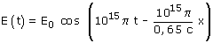
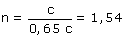

|
a) La expresión dada no es un vector (¿Dónde están los unitarios i, j?) sino la componente del vector según un determinado eje Para empezar hay que convertir la ecuación de onda a la forma normal:  Identificando los coeficientes de la ecuación:
El índice de refracción del vidrio es el cociente de la velocidad de la luz en el vacío entre la velocidad de la luz en el vidrio:  |